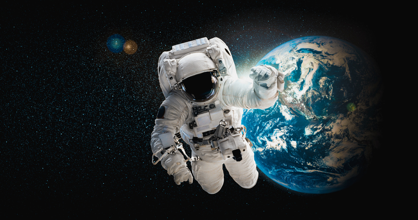
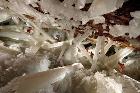
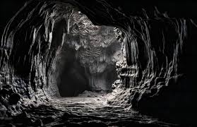
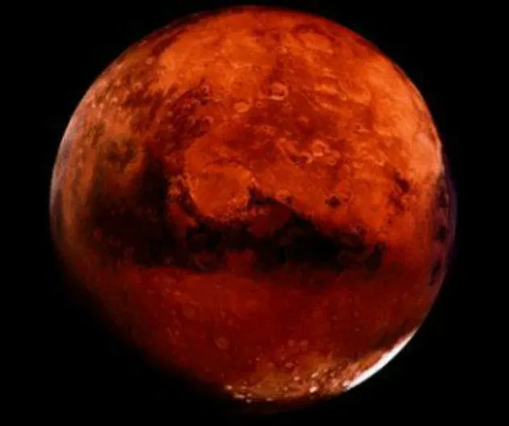
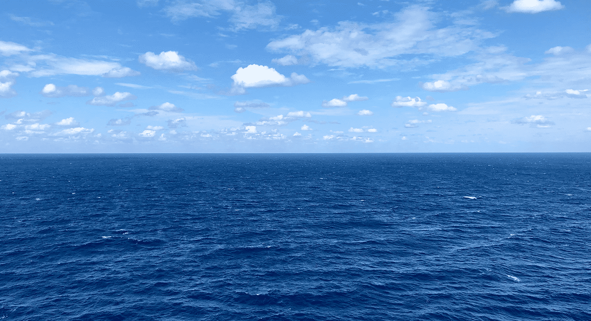
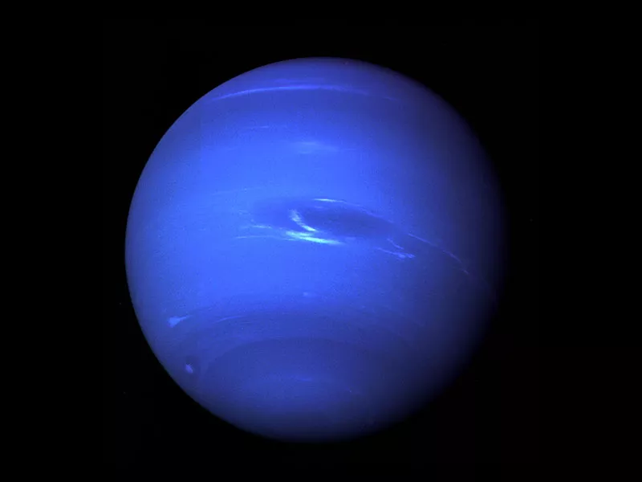

Você encontra um mapa misterioso que indica o início da jornada.

Você entra em uma caverna brilhante, cheia de cristais reluzentes.

A luz desaparece e você se vê em uma caverna escura e silenciosa.

Ao sair da caverna, uma lua vermelha ilumina o céu.
Você atravessa montanhas imponentes em busca da próxima pista.

O som das ondas guia sua jornada até o horizonte.

Você descobre um planeta azul, cheio de mistérios.

Finalmente, você chega ao HH, o destino final da jornada.